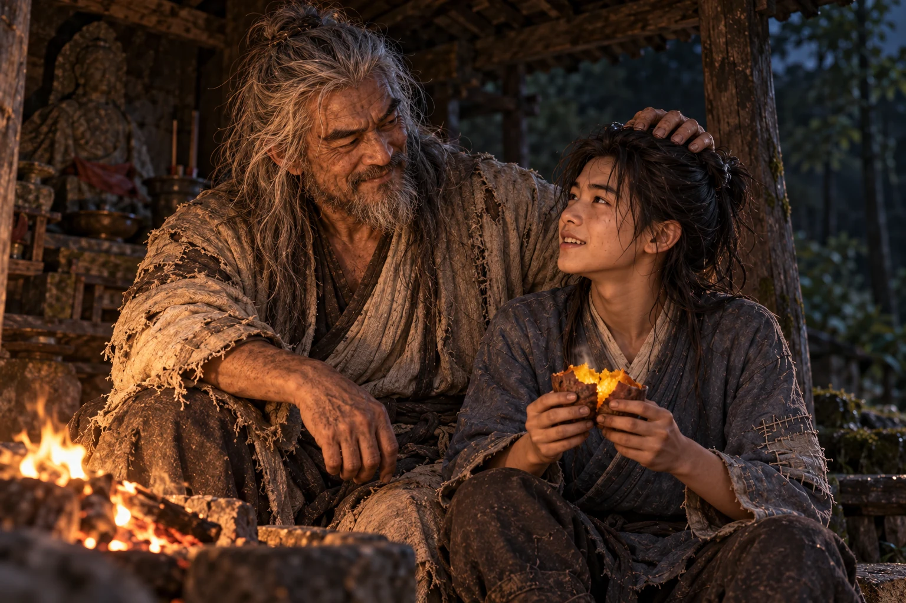
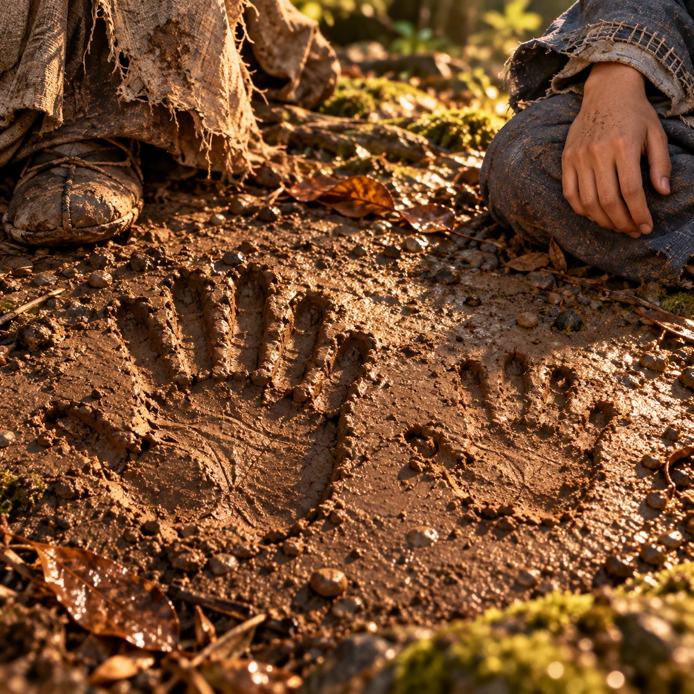
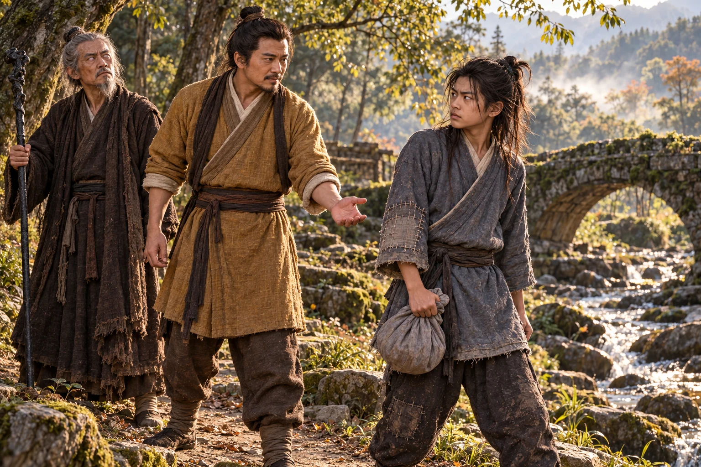

Sepasang kaki menjulur dari balik semak. Telapaknya menghadap langit.
berhenti. Setelah apa yang terjadi di rumah keluarga Lu, ia tidak ingin menemukan mayat lagi. Ia baru hendak memutar ketika kedua kaki itu bergoyang, lalu seorang lelaki tua muncul dengan berjalan di atas tangan.
Rambut kelabunya menyapu tanah. Jubah kusamnya melorot ke arah bahu, memperlihatkan celana yang terikat di pergelangan kaki. Kedua lengannya kokoh menopang tubuh. Ia berjalan lurus ke arah Dani.
“Tetua, hati-hati! Jangan menabrakku!” seru Dani.
Orang itu mendongak dari bawah. Dani mundur dua langkah; tumitnya tersangkut akar. Sebuah tangan tiba-tiba menyambar kerahnya sebelum ia jatuh. Dalam sekejap lelaki itu sudah berdiri tegak.
Tarikan tersebut menyentak dada Dani. Ia mendesis, menepis tangan itu, lalu menyesali gerakannya sendiri.
“Siapa yang memukulmu?” tanya lelaki tua itu.
“Seorang perempuan membawa , Tetua. Jangan tarik kerahku; dadaku masih sakit!” seru Dani.
Mata lelaki itu membelalak. Rambut acak-acakan membingkai wajah keras dengan hidung tinggi dan alis lebat. Ia meraba bahu Dani, seolah mencari sesuatu yang telah lama hilang.
“Berani memukul anakku? Mana dia? Panggil ke sini!” bentak lelaki tua itu.
“Perempuan itu sudah pergi, Tetua. Tetapi aku bukan anak—” bantah Dani.
“Pergi? Takut! Semua takut kepadaku. Aku yang paling hebat. Paling hebat!”
Teriakannya membuat burung-burung terbang dari pepohonan. Dani menelan sisa bantahannya. Orang gila ini sanggup menegakkan tubuh dari satu tangan sambil mengangkatnya seperti karung kosong. Jangan membantah dahulu. Cari jalan lepas, pikir Dani. Ia memperhatikan arah kaki lelaki itu, bukan lagi mencoba memenangkan percakapan.
Ia melirik jalan di belakang lelaki itu.
“Kalau Tetua memang sedang bersenang-senang, aku tidak berani mengganggu.” Dani bergeser sedikit. “Aku hanya ingin lewat. Tanah selebar ini tentu masih menyisakan tempat untuk kakiku.”
“Rumahmu di mana?” tanya lelaki tua itu.
membuka mulut, lalu mengangkat bahu. Lelaki tua itu malah menangkap pergelangan tangannya.
“Ikut aku. Anakku tidak boleh tidur di jalan,” ujar lelaki tua itu.
“Aku masih sanggup berjalan sendiri, Tetua! Pergelangan yang itu juga terluka,” balas Dani.
Pegangan itu langsung mengendur.
Tempat tinggal yang dimaksud hanyalah sebuah tempat pemujaan kosong di pinggir hutan. Atapnya bocor, tetapi salah satu sudutnya masih kering. Lelaki tua itu mengeluarkan dua ubi dari lipatan jubah dan memasukkannya ke bara api. Dani memandang ubi itu, lalu memandang jubahnya.
“Apakah Tetua masih menyimpan makanan lain di dalam jubah itu?” tanya Dani.
“Apa lagi yang diminta anakku? Katakan kepadaku!” tanya lelaki tua itu.
“Barangkali ada ayam. Aku hanya bertanya, Tetua; dua ubi itu pun sudah banyak,” jawab Dani.
Lelaki itu benar-benar merogoh lengan bajunya. Dani menahan tawa, kemudian terbatuk kesakitan. Tangannya buru-buru menekan dada.
Senyum lelaki tua itu lenyap. Ia berjongkok, memeriksa bagian yang terkena pukulan melalui kain baju, lalu memerintahkan Dani diam. Kali ini jari-jarinya ringan. Dani tetap mengawasi wajahnya, siap menepis apabila orang itu mulai menarik-narik lagi.
“Memar! Mereka berani meninggalkan bekas pada anakku. Jangan bergerak! Kau hendak merusakkan dadamu sendiri?” kata lelaki tua itu.
“Bukan aku yang melukai diri, Tetua. Perempuan itulah yang melemparkanku,” balas Dani.
“Siapa berani—”
“Perempuan berkebut yang kuceritakan tadi, Tetua. Dia sudah jauh dari sini,” jawab Dani.
Lelaki itu mengerutkan dahi, lalu mengangguk dengan kesal. menyembunyikan senyum di balik lutut. Setidaknya, ia sudah menemukan cara menghentikan teriakannya.
Ketika ubi matang, lelaki itu membelah yang paling besar dan menyodorkannya. Jari Dani kepanasan. Ia memindah-mindahkannya dari telapak ke telapak sambil meniup. Lelaki itu tertawa keras, kemudian mengambil separuh ubi tersebut untuk ditiupnya sendiri.
“Tetua, bolehkah aku mempelajari ilmu silat yang tadi diperlihatkan?” tanya Dani.
“Ilmuku paling tinggi! Mereka semua hendak mencurinya. Biar mereka datang, akan kupatahkan tangannya!” jawab lelaki tua itu.
“Aku ingin belajar melindungi diri, Tetua. Kalau berjalan di atas tangan, rasanya aku belum berani,” kata Dani.
“Bodoh! Bukan itu! Sekali pukul, mereka terpelanting. Tanganku yang memukul, mengapa mereka masih berani tertawa?” seru lelaki tua itu.
Dani mengangguk terlalu cepat. Saat mengingat dibawa melewati gerbang, ia meremas kulit ubi sampai dagingnya penyok. Kali berikutnya, ia ingin bisa melakukan lebih dari sekadar melempar buntalan. “Aku ingin belajar, Tetua. Tetapi aku tak punya uang untuk membalas kebaikan itu.”
“Siapa minta uang? Panggil ayah!” bentak lelaki tua itu.
Dani menatapnya. “Kalau kupanggil Guru saja, bolehkah?”
“Tidak! Murid banyak. Anak cuma satu. Kau anakku,” jawab lelaki tua itu.
“Tetapi aku sudah mempunyai seorang ayah, Tetua,” kata Dani.
“Di mana dia? Mengapa anakku berada seorang diri di jalan?” desak lelaki tua itu.
“Ayah kandungku sudah meninggal,” jawab Dani.
Lelaki tua itu berhenti mengunyah. Sesaat rahangnya bergerak tanpa suara. Kemudian ia mendekat, hampir berbisik.
“Tidak. Aku di sini. Lihat baik-baik. Aku masih di sini,” bisik lelaki tua itu.
Jari-jarinya mencengkeram lengan jubahnya sendiri. tadinya hendak berkata bahwa mereka bahkan tidak mirip, tetapi kata-kata itu tertahan. Wajah di hadapannya tampak begitu ketakutan sehingga ia tidak sanggup menertawakannya.
“Namaku Dani Moan, Tetua. Barangkali bukan aku anak yang sedang dicari,” ujar Dani.
“Dani. Dani…” gumam lelaki tua itu.
Ia mengulang nama itu, mengangguk, lalu tersenyum lebar seolah persoalannya telah selesai.
“Bagus. Anakku bernama Dani,” kata lelaki tua itu.
Dani memandangi ubi di tangannya. Tadi ia hendak mengangguk saja demi makanan dan ilmu. Namun orang tua itu sudah memberinya bagian terbesar dan kini menunggu dengan mata yang sungguh-sungguh cemas. Dani mendadak tak tega meneruskan akalnya. “Kalau aku memanggil Tetua Ayah, jangan besok berpura-pura tidak mengenalku. Aku juga tidak akan melupakan ayahku yang sudah meninggal. Bolehkah begitu?”
“Boleh, boleh! Panggil!” seru lelaki tua itu.
“Ayah.” Dani mengucapkannya pelan, lalu menggigit ubi untuk menyembunyikan bibirnya yang gemetar. “Besok bagian Ayah jangan lebih kecil lagi.”
Suara itu keluar kecil. Lelaki tua tersebut tertawa sampai matanya basah, lalu mengusap kepala Dani dengan telapak yang masih berabu. Dani biasanya akan mengelak. Kali ini ia hanya memiringkan wajah supaya abu tidak masuk ke matanya.

Sudah lama ia tidak makan bersama orang yang menyisakan bagian terbesar untuknya.
“Ayah belum memberitahukan nama. Jika nanti orang bertanya, aku harus menyebut nama siapa?” tanya Dani.
“Namaku…” jawab lelaki tua itu.
Senyumnya surut. Ia memandangi api, mengepalkan tangan, lalu memukul lututnya sendiri.
“! Ya. Ouyang Feng. Siapa lagi yang berani memakai namaku?” seru lelaki tua itu.
mengulang nama itu dalam hati. Ketika Ouyang Feng bertanya apakah ia masih lapar, Dani mengangkat separuh ubi yang belum habis. “Aku akan menghabiskan yang ini dahulu. Ayah makanlah juga; sejak tadi hanya aku yang disuapi.”
Tiga hari berikutnya mereka tinggal di sekitar tempat pemujaan itu. Ouyang Feng kadang membangunkan Dani sebelum terang, lalu lupa hendak mengajarinya apa. Pernah ia menyuruh Dani berjongkok, pergi mencari kayu, dan baru kembali setelah kedua paha anak itu gemetar. Dani menyambutnya dengan muka masam.
“Ayah, sebentar bagi Ayah rupanya panjang sekali! Kakiku sudah mau meninggalkan aku.”
“Kau masih di sini?” tanya Ouyang Feng.
“Aku tidak berani melanggar perintah Ayah. Tetapi kalau kakiku roboh, marahilah mereka, jangan aku!”
Ia jatuh terduduk. Ouyang Feng tertawa, tetapi menariknya bangun dengan hati-hati. Nyeri di dada Dani belum hilang; gerakan mendadak masih membuat napasnya tersangkut. Pelajaran mereka berlangsung pendek-pendek, diselingi istirahat dan pertengkaran soal apakah Dani sudah boleh mencoba lagi.
Ouyang Feng menyebut ilmunya . Saat memberi contoh, ia merendahkan tubuh, diam sesaat, lalu menghantamkan telapak ke tanah di sampingnya. Tanah liat lembap itu amblas. Getarannya terasa sampai ke kaki Dani.
Mulut Dani terbuka. Ia segera mengambil posisi yang sama.
“Kau mau apa?” tanya Ouyang Feng.
“Aku hendak mencoba gerakan yang Ayah perlihatkan,” jawab Dani.
“Belum kuajari!”
“Sekali saja, Ayah. Kalau salah, barulah Ayah boleh memarahiku. Dari tadi aku sudah dimarahi sebelum sempat mencoba.”
Telapak Dani menghantam tanah. Lumpur memercik ke dagu; lengannya kesemutan. Bekas tangannya jauh lebih dangkal daripada milik Ouyang Feng. Ia lekas menaruh telapak sekali lagi di tempat yang sama.
“Tanganmu! Siapa menyuruhmu memukul dua kali? Kau hendak menipuku?” seru .
“Barangkali tanah di sebelahku lebih keras, Ayah,” balas .
Ouyang Feng meraih tengkuknya dan menggesernya ke samping. Dani meringis, lalu tertawa malu ketika ayah angkatnya menunjuk dua cekungan di tanah itu: yang satu dalam dan utuh, yang lain dangkal dengan bekas jari berantakan. “Bukan tangannya! Di dalam! Di sini, bodoh! Jangan dengarkan mereka. Dengarkan ayahmu!”

Dani menyeka dagunya dengan lengan baju. Kali ini ia diam. Ia mengikuti koreksi pada bahu, pinggang, dan cara mengumpulkan tenaga. Ada penjelasan yang terputus karena Ouyang Feng tiba-tiba memaki seseorang yang tidak berada di sana; Dani harus menunggu, lalu mengulang pertanyaannya dari awal.
Ia cepat mengingat gerakan, tetapi tubuhnya tidak selalu sanggup mengikuti. Pada sore terakhir, ia berhasil merasakan sesaat tenaga terkumpul sebelum buyar karena terlalu ingin segera memukul. Ia mengeluh. Ouyang Feng justru bertepuk tangan.
“Itu! Tadi itu. Anak pintar. Besok lagi!” seru Ouyang Feng.
“Izinkan aku mencoba sekali lagi, Ayah. Tadi tenaganya hampir terkumpul,” pinta Dani.
“Besok!”
Biasanya Dani masih akan menawar. Kali ini ia berhenti: meskipun mulut Ouyang Feng tersenyum bangga, telapak tuanya tetap menutupi bagian dada Dani yang memar.
Pagi berikutnya, besok yang dijanjikan itu batal.
Ouyang Feng sedang membetulkan posisi kaki Dani ketika tubuhnya mendadak kaku. Ia menoleh ke hutan, lalu berputar, mencari sesuatu di balik bahunya sendiri. “Siapa memanggil? Jangan sembunyi!”
“Ayah mendengar suara dari arah mana? Aku tidak melihat seorang pun di sana,” tanya Dani.
“Namaku siapa? Kau tahu? Bukan, bukan itu!”
“Nama Ayah Ouyang Feng. Ayah sendiri yang memberitahukannya kepadaku,” jawab Dani.
Nama itu justru membuatnya berteriak. Ia mendorong Dani menjauh, bukan untuk menyakiti, melainkan seolah ada serangan yang harus dihindarkan. Kemudian ia berlari ke antara pepohonan.
“Ayah! Tunggu aku!” menyambar buntalannya dan mengejar. Baru beberapa puluh langkah, dadanya terasa ditusuk. Ia terpaksa berhenti sambil memegangi batang pohon. Teriakan makin jauh, kemudian hilang. Tidak ada jejak yang bisa Dani ikuti di antara akar dan daun kering.
Ia menunggu sampai matahari melewati pucuk-pucuk bambu, menimbang apakah panggilannya tadi membuat Ouyang Feng marah. Tetapi lelaki itu bahkan tidak lagi melihat dirinya ketika berlari. Dani tidak tahu bagaimana mengejar pikiran yang tersesat di dalam kepala ayah angkatnya. Menjelang siang ia kembali ke tempat pemujaan; bara telah dingin, dan ubi terakhir masih terselip di tepinya.
Dani mengambilnya, membersihkan abu, lalu memasukkannya ke buntalan. Ia meninggalkan jejak kaki yang sengaja dibuat jelas pada tanah lembap di depan pintu, menuju jalan besar. “Aku akan mencari Ayah di jalan besar. Jika Ayah kembali, ikutilah jejak kakiku ini.”
Tidak ada jawaban. Dani mengencangkan simpulnya dan berangkat.
Di dekat jembatan batu, dua orang berjalan dari arah berlawanan. Yang muda berbadan tegap, berjubah warna tanah hangat; yang tua membawa tongkat besi hitam. Mata lelaki tua itu tidak mengikuti gerak Dani, tetapi kepalanya menoleh tepat ketika sepatu Dani menggesek kerikil.
“Jing'er, ada langkah seorang anak di depan kita,” kata .
Lelaki berjubah cokelat keemasan itu berhenti. Pandangannya tertahan pada wajah Dani.

“Adik kecil, tunggu sebentar. Siapa namamu?” tanya .
“Untuk apa Paman menanyakan namaku?” tanya Dani.
“Wajahmu mengingatkan Paman kepada seorang saudara lama. Paman hendak memastikan sesuatu,” jawab Guo Jing.
Dani memindahkan buntalan ke sisi yang menjauhi mereka. Tiga hari lalu ia bertemu orang yang langsung mengaku ayah; sekarang ada orang lain yang mengaku paman. “Saudara Paman itu juga pernah berjalan dengan wajah penuh lumpur seperti aku?”
Guo Jing membiarkan sindiran itu lewat. Tatapannya tetap tenang pada wajah Dani. “Lumpur dapat dibasuh, tetapi sorot mata itu tetap dapat Paman kenali. Siapa namamu, Nak?”
Dani hampir tersenyum. “Namaku Dani Moan, Paman.”
Wajah Guo Jing berubah. Ia maju setapak, tetapi berhenti ketika Dani menegangkan bahunya.
“Apakah ayahmu bernama ?” tanya Guo Jing.
Tongkat di sampingnya mengetuk batu dengan keras.
“Dari mana Paman mengenal nama ayahku?” tanya .
“Kalau begitu, apakah ibumu?” tanya Guo Jing.
Kini Dani tidak tersenyum lagi. Ia mengangguk, matanya bergerak dari Guo Jing ke lelaki tua yang mengatupkan rahang.
“Aku Guo Jing. Ayahmu saudara angkatku. Kami sudah lama mencari kabar kalian. Ibumu sekarang di mana?” kata Guo Jing.
“Ibuku sudah meninggal, Paman,” jawab Dani.
Tangan yang terulur perlahan turun. Ia memandang baju Dani yang robek dan buntalan kecilnya, lalu menarik napas berat.
“Maafkan Paman. Seharusnya Paman lebih cepat menemukanmu,” kata Guo Jing.
“Ibu memang tidak senang merepotkan orang lain, Paman,” balas Dani.
“Paman mengenal pendiriannya itu. Dahulu pun ia menolak ketika kami menawarkan bantuan,” kata Guo Jing.
Dani mengendurkan pegangannya sedikit. Orang ini tahu sesuatu yang tidak mungkin ditebak hanya dengan melihat wajahnya.
“Jing'er. Jangan memutuskan hanya karena wajahnya mirip,” kata .
“Murid memahami peringatan Guru. Karena itulah murid menanyakan nama kedua orang tuanya,” balas Guo Jing.
“Nama dan wajah masih harus diperiksa, Jing'er. Jangan biarkan perasaan mendahului kewaspadaanmu,” jawab Ke Zhen'e.
Guo Jing terdiam. Dani menatap lelaki tua itu; panas mulai merayap ke telinganya.
“Tetua belum tahu siapa aku, tetapi sudah tidak menyukaiku. Sayang sekali, padahal aku belum sempat berbuat apa-apa.” mengangkat dagu. “Aku hanya mencari seseorang.”
“Guru Paman bernama Ke Zhen'e. Beliau khawatir Paman keliru. Duduklah dulu, Dani. Dadamu sakit?” ujar Guo Jing.
Dani baru sadar tangannya kembali menekan baju. Ia ingin menyangkal, tetapi Guo Jing telah bergeser memberi tempat di sisi jembatan yang teduh. Tidak ada yang menariknya. Ia duduk dengan jarak satu lengan dari mereka.
Cerita tentang rumah keluarga Lu keluar tersendat, lalu makin cepat ketika sampai pada kaki dan gerbang yang hancur. Jarinya menunjuk arah jalan. Ia menyebut , lalu yang membawa .
“Paman Guo, Wushuang dibawa Li Mochou dalam keadaan terluka. Mohon Paman mencari kabarnya,” tanya Dani.
“Paman akan mencari kabarnya,” jawab . “Kalau Cheng Ying bersama Huang Yaoshi, dia bersama ayah mertuaku. Beliau bisa menolongnya.”
Dani mengembuskan napas. Setidaknya satu orang benar-benar berada di tempat aman. Guo Jing memeriksa memarnya setelah meminta izin; Dani mendesis ketika disentuh, lalu buru-buru berkata bahwa sakitnya sudah jauh berkurang.
“Kau perlu istirahat. Ikut Paman. Di rumah ada makanan dan tempat tidur,” ujar Guo Jing.
“Aku masih harus mencari ayah angkatku, Paman. Pagi tadi kami terpisah,” balas Dani.
“Siapa yang telah mengangkatmu sebagai anak?” tanya Ke Zhen'e.
Nada tajam membuat Dani kembali menutup diri. Ia mengangguk pendek. Jangan sampai ia menanyai Ayah, pikirnya. Orang tua itu belum mengetahui siapa bagi dirinya. Dani takut setiap tingkah ganjil ayah angkatnya akan dipakai untuk meniadakan kebaikan yang baru beberapa hari dirasakannya.
“Di mana kalian tinggal?” tanya Guo Jing.
Dani menunjuk tempat pemujaan yang atapnya tampak di sela pohon. Guo Jing mengajaknya memeriksa sekali lagi. Mereka menemukan sudut tidur yang kosong, bekas api, dan jejak kaki Dani sendiri. Panggilan mereka tidak mendapat jawaban.
Saat Guo Jing bertanya ke mana ayah angkatnya biasa pergi, Dani hanya bisa menggeleng. Ia baru menyadari betapa sedikit yang diketahuinya tentang lelaki itu.
“Kita tinggalkan pesan di sini. Kalau beliau kembali, beliau tahu kau bersama Paman,” kata Guo Jing.
Dengan arang sisa api, Guo Jing menuliskan nama dan arah perjalanannya pada papan bersih di dekat tempat mereka tidur. mengawasi sampai selesai. Setidaknya kini ada sesuatu yang bisa dibaca Ouyang Feng apabila jejak kakinya hilang.
“Jing'er, kau sungguh akan membawanya?” tanya Ke Zhen'e.
“Murid akan membawanya, Guru. Anak saudaraku tidak patut dibiarkan sendirian dalam keadaan terluka. Jika ia keliru, menjadi tanggung jawabku untuk membimbingnya,” jawab Guo Jing.
“Tetapi aku belum mengatakan hendak ikut, Paman,” balas Dani.
menoleh dan menunggu. Itu malah membuat Dani salah tingkah. Ia menggaruk noda abu di ujung hidungnya, memandang jalan, lalu kembali memandang papan tersebut.
“Kalau ayah angkatku datang, jangan usir beliau, Paman,” kata Dani.
“Paman akan mendengarkan beliau,” balas Guo Jing.
“Aku juga tak hendak menumpang makan saja. Aku bisa mencari kayu dan menjahit sedikit, meskipun jahitanku belum rapi,” tambah Dani.
“Kemauanmu membantu Paman hargai. Tetapi makanan dan tempat bernaung bukan upah yang harus kaubeli dengan tubuh terluka. Pulihkan dirimu dahulu,” jawab Guo Jing.
Perut Dani berbunyi sebelum ia sempat menjawab. Guo Jing tersenyum tanpa menertawakan. Bahkan hanya berdeham dan berbalik ke arah jalan.
Dani meraba ubi terakhir di dalam buntalan. Ia membiarkannya di sana, kemudian menyusul kedua lelaki itu. “Paman Guo, jangan terlalu cepat. Kakiku masih pegal.”
Guo Jing segera memperlambat langkah. Kali ini Dani tidak perlu berlari untuk mengejar.